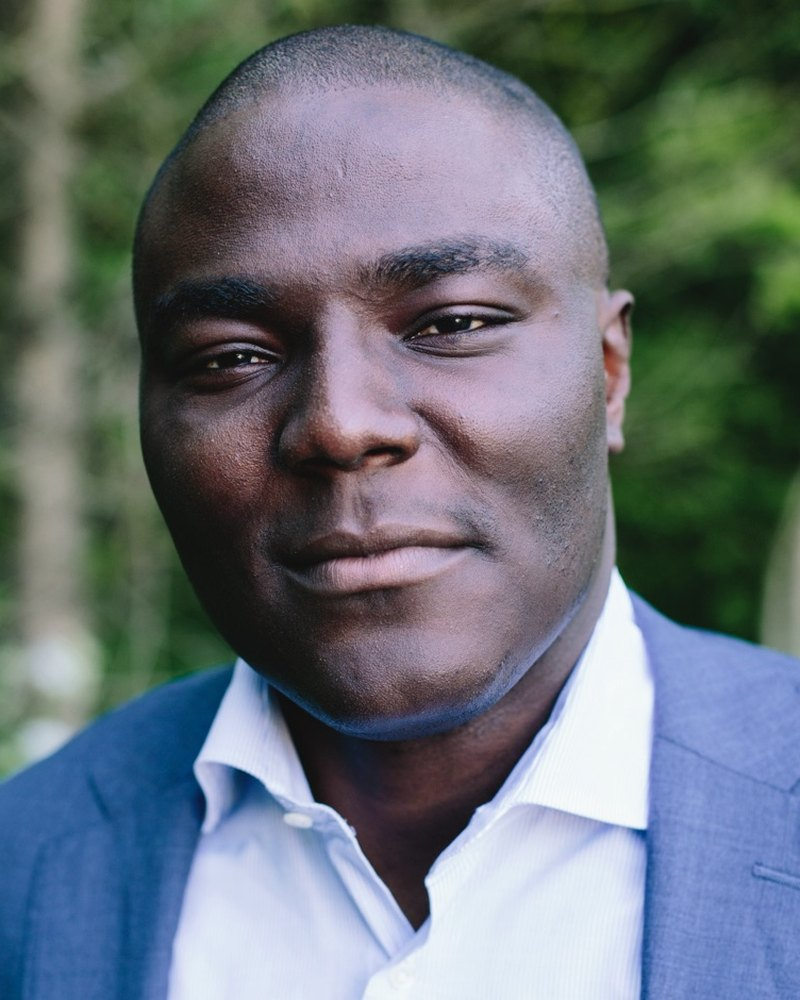

Connecting the operational rigor of global financial centers with West Africa's fastest-developing markets.
Gideons River is built on two decades on Wall Street — including years at a leading global clearing house, where our principal worked on the delivery of the US transition to T+1 settlement and on Treasury clearing. That experience, inside the post-trade machinery through which institutional risk is cleared and settled, is the lens through which the firm sees opportunity.
Gideons River operates across three practices — Financial Market Infrastructure Consulting (regulatory design, operating models and programmes for the institutions that clear, settle and report), Management Consulting (organization transformation and project delivery across sectors), and Ventures (the firm's own institution-building, where the rules call for infrastructure that does not yet exist). The Principal works across Nigeria and the US, with engagements involving senior public- and private-sector stakeholders.
We serve central banks and securities regulators, financial market infrastructures, Tier 1 banks and other key stakeholders, and the development finance institutions that fund market reform — close enough to the market to understand it, and close enough to global practice to hold it to standard.
Lagos · Abuja · New York

Ade Arowolo · Founder and Principal
Ade Arowolo is the founder and Principal of Gideons River. He is a financial market infrastructure specialist with 21 years on Wall Street across bulge-bracket banking, management consulting, post-trade clearing and fintech — including roles at Citi, Merrill Lynch and Bank of America, Barclays and BNP Paribas, and most recently at one of the world's largest post-trade infrastructures, where he worked on the United States' move to T+1 settlement and on derivatives central clearing.
His expertise is over-the-counter derivatives post-trade, programme management and business transformation. A dual US–Nigerian citizen, he has built Gideons River full-time since March 2026 and works between Lagos and the US Northeast.
Contact Ade →We pair Wall Street post-trade discipline with deep knowledge of Nigeria's market rules to build the infrastructure the rules already imply.
Our work lives on both sides of the corridor — Ikoyi in Lagos, Maitama in Abuja and the Upper East Side in New York.
Find our offices →